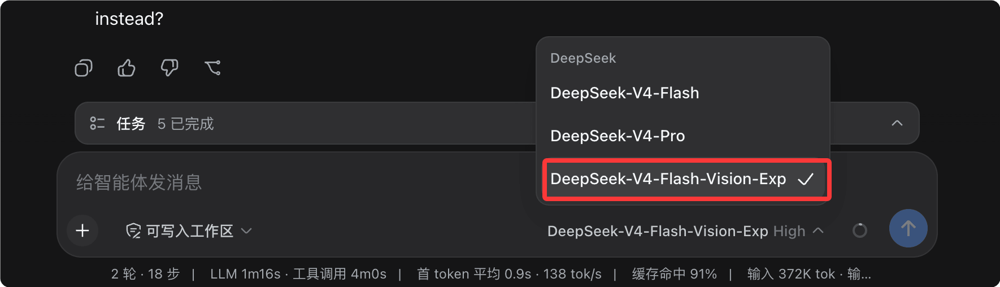
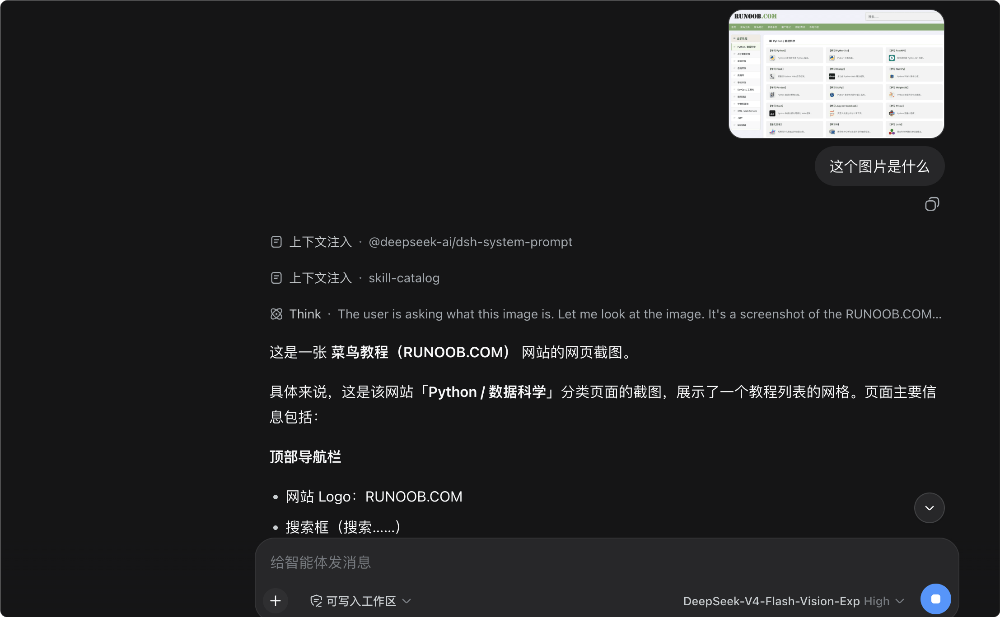
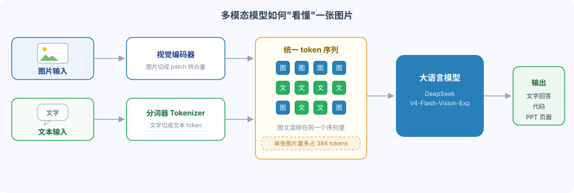
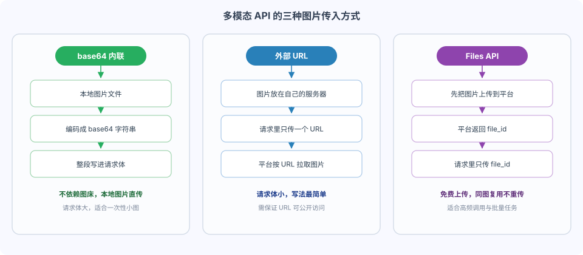

DeepSeek Harness マルチモーダル
DeepSeek は実験的なマルチモーダル視覚理解モデル DeepSeek-V4-Flash-Vision-Exp をリリースし、同時にマルチモーダルAPIサービスと無料の Files API を公開しました。
使用前に最新バージョンをインストール:
npm install -g @deepseek-ai/dsh@latest
最新版に更新すると、モデルに DeepSeek-V4-Flash-Vision-Exp が追加されているのが確認できます:

視覚モデルに切り替えて、画像や PPT ファイルを直接ドキュメントにドラッグ＆ドロップすると、画像内の内容を確認させることができます（ テスト画像ダウンロード）：

マルチモーダルとは
マルチモーダルを理解するには、まず「モダリティ」（modality）という言葉を理解する必要があります。モダリティとは情報の異なる表現形式を指します。文字は一つのモダリティであり、画像、音声、動画もそれぞれ異なるモダリティです。
| モダリティ | 一般的な形式 | 対応するAI機能 |
|---|---|---|
| テキスト | 文章、コード、対話 | 大規模言語モデル（LLM） |
| 画像 | 写真、スクリーンショット、デザイン稿、チャート | 視覚理解モデル |
| 音声 | 音声、音楽 | 音声認識・生成モデル |
| 動画 | ショート動画、画面収録、監視カメラ映像 | 動画理解モデル |
従来の大規模言語モデルはテキストという1つのモダリティしか処理できず、送信するすべての内容をまず文字に変換する必要がありました。
一方、マルチモーダルモデルは画像とテキストを同時に受け取り、それらを統一的にトークン系列に変換してまとめて処理できます。

重要なのは、画像はモデルに「直接見られている」のではなく、まず視覚エンコーダーによって小さな断片（パッチ）に分割されベクトルに変換され、その後テキストトークンと同じ系列に結合されるということです。
画像もトークンを消費し、1枚の画像は最大384トークンを占めます。これが後述のマルチモーダル課金ルールの根拠です。
Agentにとって、マルチモーダルは付け足しではなく、質的な変化をもたらします。
| 比較項目 | テキストのみのモデル | マルチモーダルモデル |
|---|---|---|
| 入力形式 | 文字のみ | テキストと画像の混合 |
| コードエラーの特定 | ユーザーがエラーを手動で文字に書き写す必要がある | エラーのスクリーンショットをそのまま送信 |
| デザイン稿の再現 | ビジュアル稿を参照できない | デザイン稿を見ながら直接ページを作成 |
| データチャートの分析 | 画像内のグラフを読み取れない | 画像を見て直接結論を出す |
V4-Flash-Vision-Exp：マルチモーダル視覚モデル登場
DeepSeek-V4-Flash-Vision-Exp は実験的なマルチモーダル視覚理解モデルであり、現在 DeepSeek API プラットフォームで提供されています。
ユーザーは設定でmodel='deepseek-v4-flash-vision-exp'このモデルにアクセスできます。
その能力の位置づけは一言でまとめられます。テキスト能力は劣らず、視覚能力は大幅に向上しました。
純テキスト能力（Agent、推論、世界知識など）に関しては、DeepSeek-V4-Flash 正式版と同等です。
視覚理解が必要な Agent Benchmark では、DeepSeek-V4-Flash と比較して大幅な向上を達成し、マルチモーダル Agent 能力は Opus-4.8 に迫っています。
| 能力の次元 | DeepSeek-V4-Flash | DeepSeek-V4-Flash-Vision-Exp |
|---|---|---|
| 純テキスト Agent タスク | 正式版基準 | 正式版と同等 |
| 推論と世界知識 | 正式版基準 | 正式版と同等 |
| 視覚理解 Agent タスク | 非対応、評価ではマルチモーダル要素を無視 | 大幅に向上、Opus-4.8 に接近 |
| モデルの位置づけ | 正式版 | 実験版 |
評価基準の説明: 公開ベンチマークテストセットの Code Agent テキストタスクについて、DeepSeek シリーズモデルは DeepSeek Harness のミニマルモードをフレームワークとしてテストし、max レベル、temperature=1.0、topp=0.95 を使用します。
ApexBench と Agents' Last Exam の評価では、テキストモデル DeepSeek-V4-Flash はその中のマルチモーダル要素を無視します。
マルチモーダルAPIクイックスタート
マルチモーダルAPIは Chat Completions、Messages、Responses の3つの形式での呼び出しに対応しており、さまざまな Agent ツールに簡単に統合できます。
3つの形式の機能は同等なので、慣れたインターフェーススタイルに合わせて選択してください。
| 呼び出し形式 | インターフェーススタイル | 誰向けか |
|---|---|---|
| Chat Completions | OpenAI クラシック対話インターフェース | OpenAI SDK コードを既に持っている開発者 |
| Messages | Anthropic Messages インターフェース、base_url は https://api.deepseek.com/anthropic | Anthropic スタイルのコードやツールチェーンを既に持っている開発者 |
| Responses | OpenAI 新版 Responses インターフェース | 新版 SDK を使用し、簡潔な入力構造を好む開発者 |
3つの形式すべてがテキストと画像の混合入力に対応しており、画像の渡し方は base64インライン、外部URL、Files API の3種類があります。

| 渡し方 | リクエストボディのサイズ | 画像ホスティングが必要か | 適用シーン |
|---|---|---|---|
| base64インライン | 大 | 不要 | ローカル画像、一度きりの小さい画像 |
| 外部URL | 小 | 必要 | 画像が公開アクセス可能なサーバーにデプロイされている |
| Files API | 小 | 不要 | 同じ画像の複数回使用、高頻度のバッチタスク |
方法1: base64インライン
ローカル画像を base64 文字列にエンコードし、data URL 形式でリクエストボディに直接記述します。
例
# 依存: pip install openai
import base64
from openai import OpenAI
# DeepSeek エンドポイントは OpenAI SDK と互換性があり、base_url を変更するだけで切り替え可能
client = OpenAI(
api_key="sk-あなたのAPIキー", # 必須: ご自身の DeepSeek API キーに置き換えてください
base_url="https://api.deepseek.com" # 必須: DeepSeek 公式エンドポイント
)
# ローカル画像を読み込み、base64 文字列にエンコード
with open("runoob-logo.png", "rb") as f:
b64 = base64.b64encode(f.read()).decode("utf-8")
response = client.chat.completions.create(
model="deepseek-v4-flash-vision-exp", # 必須: マルチモーダル視覚理解モデル
messages=[
{
"role": "user",
"content": [
# テキストと画像を配列の順に混在させ、モデルはその順に理解する
{"type": "text", "text": "画像の中の文字は何ですか？"},
{
"type": "image_url",
# base64インライン: data:画像形式;base64,エンコード内容
"image_url": {"url": f"data:image/png;base64,{b64}"}
}
]
}
],
stream=False # 任意: ストリーム出力するかどうか、デフォルトは False
)
print(response.choices[0].message.content)
実行出力:
图片中的文字是 "RUNOOB"。
方法2: 外部URL
画像を公開アクセス可能なサーバーにデプロイし、リクエストには URL 文字列だけを渡すため、リクエストボディが非常に小さくなります。
例
curl https://api.deepseek.com/chat/completions \
-H "Content-Type: application/json" \
-H "Authorization: Bearer ${DEEPSEEK_API_KEY}" \
-d '{
"model": "deepseek-v4-flash-vision-exp",
"messages": [
{
"role": "user",
"content": [
{"type": "text", "text": "このグラフの傾向を一言でまとめてください"},
{"type": "image_url", "image_url": {"url": "https://static.runoob.com/images/chart-demo.png"}}
]
}
]
}'
URL はプラットフォームがアクセス可能な公開アドレスである必要があり、内網アドレスやローカルループバックアドレスは取得できません。
base64 と URL の両方の方法で、image_url に任意の detail フィールドを追加して、画像の解析精度を制御できます。
| detail の値 | 動作 | 適用シーン |
|---|---|---|
| low | 512×512 にスケールしてから解析するため、トークン消費が少ない | 概要だけ見れば十分：画像タイプの判定、主体の特定 |
| high | original と同等 | 細部をはっきり確認する必要がある |
| original | 原図の精度を保持して解析 | 文字を読み、小さなアイコンを確認し、図表を分析する |
| auto | 現在は original と同等 | デフォルト値、detail を渡さない場合の動作 |
スクリーンショット系タスクをバッチ実行する際に detail を low に設定することは、マルチモーダルコストを抑える最も直接的な手段です。
Messages と Responses 形式
既に Anthropic または新版 OpenAI スタイルのコードを使用している場合、ほぼシームレスに DeepSeek マルチモーダルへ切り替えられます。
Messages 形式は image コンテンツブロックを使用し、画像は source フィールドで渡します。
例
# エンドポイントは DeepSeek の Anthropic 互換パス /anthropic を使用。ヘッダーフィールドも Anthropic と一致
curl https://api.deepseek.com/anthropic/v1/messages \
-H "Content-Type: application/json" \
-H "x-api-key: ${DEEPSEEK_API_KEY}" \
-d '{
"model": "deepseek-v4-flash-vision-exp",
"max_tokens": 1024,
"messages": [
{
"role": "user",
"content": [
{
"type": "image",
"source": {
"type": "url",
"url": "https://static.runoob.com/images/code-screenshot.png"
}
},
{"type": "text", "text": "このコードを実行するとエラーになりますが、問題は何行目ですか？"}
]
}
]
}'
Responses 形式は input 配列を使用し、テキストには input_text、画像には input_image を使います。
例
# client の作成方法は上記の base64 例と同じ
response = client.responses.create(
model="deepseek-v4-flash-vision-exp", # 必須：マルチモーダル視覚理解モデル
input=[
{
"role": "user",
"content": [
# テキストは input_text、画像は input_image
{"type": "input_text", "text": "スクリーンショット内のテーブルを Markdown に整理する"},
{
"type": "input_image",
"image_url": "https://static.runoob.com/images/table.png"
}
]
}
]
)
# Responses 形式では output_text を直接取得するだけでよい
print(response.output_text)
Files API: アップロードしてから参照
Files API はすでに公開されており、この API は無料です。
ユーザーはまず画像をプラットフォームにアップロードし、その後リクエスト内で file_id を使って参照できます。
これには2つの直接的な利点があります：リクエストに大きな base64 を含める必要がなくなり、リクエスト帯域幅を節約できます；同じ画像を複数のリクエストで再アップロードする必要もありません。
ステップ1：画像をアップロードして file_id を取得します。
例
# アップロード自体は無料で、費用は発生しません
curl https://api.deepseek.com/files \
-H "Authorization: Bearer ${DEEPSEEK_API_KEY}" \
-F "purpose=user_data" \
-F "file=@runoob-chart.png"
アップロードに成功すると、プラットフォームはファイルのメタ情報を返します。
例
"id": "file-api-qw3x8v2m6n",
"object": "file",
"filename": "runoob-chart.png",
"purpose": "user_data",
"bytes": 154320,
"created_at": 1787300000,
"expires_at": 1789900000
}
| フィールド | 説明 |
|---|---|
| id | ファイル識別子。file-api- で始まり、以降のリクエストではこれで画像を参照します |
| filename | アップロード時の元のファイル名 |
| purpose | ファイルの用途。現在は user_data のみサポート |
| bytes | ファイルサイズ。単位はバイト |
| created_at | アップロード時間。Unix タイムスタンプ |
| expires_at | 有効期限。オプションで、アップロード時に有効期間を設定した場合にのみ返されます |
アップロード時に expires_after パラメータで有効期間を指定することもできます。設定値は1時間から30日までで、指定しない場合は無期限です。
ステップ2：マルチモーダルリクエストで file_id を使ってこの画像を参照します。
{
"model": "deepseek-v4-flash-vision-exp",
"messages": [
{
"role": "user",
"content": [
{"type": "text", "text": "这个图表的整体趋势是什么？"},
{"type": "file", "file_id": "file-api-qw3x8v2m6n"}
]
}
]
}
いつ Files API を使うのか？
同じ画像を複数のリクエストで繰り返し使用する場合（例：同じスクリーンショット群をバッチ処理する Agent タスク）、一度アップロードして各所から参照する方が、毎回 base64 を送信するよりも帯域幅を節約でき、より高速です。
file ブロックは file_data による base64 の直接インライン化にも対応しています（file_id とは排他的で、filename フィールドと組み合わせ可能）。アップロード手順を時々省略したい場面に適しています。
Anthropic 互換の Messages エンドポイント経由で file_id を参照する場合、リクエストヘッダー anthropic-beta: files-api-2025-04-14 を追加で付ける必要があります。
課金説明と注意事項
マルチモーダルリクエストはトークン単位で課金され、画像はトークンに変換された後に課金対象となります。
| 課金項目 | ルール |
|---|---|
| 画像の課金 | 画像はトークンに変換された後、トークン単位で課金されます |
| 1枚あたりの画像上限 | 最大 384 tokens |
| 価格 | DeepSeek-V4-Flash モデルと同一 |
| Files API | 無料 |
画像トークンはコンテキストウィンドウを占有するため、複数画像タスクでは総消費量に注意してください：10枚の画像で最大 3840 tokens を占有する可能性があります。
画像はモデルに入る前に自動的にリサイズされます：約 384×384 より小さい画像は拡大され、より大きい画像は約 800×800 相当の総ピクセル数に縮小されます。
したがって、トークン消費量はリサイズ後のサイズにのみ依存し、2000×2000 と 5000×5000 の画像は同じ消費量になります。複数画像リクエストでは、各画像が同じルールで独立に計算されます。
base64 はリクエストボディを大幅に大きくするため、大きな画像や高頻度の呼び出しでは外部 URL または Files API への切り替えを推奨します。
マルチモーダルリクエストには他にもハードな制限があり、これを超えると直接 400 エラーが返されます。
| 制限項目 | ルール |
|---|---|
| 画像形式 | JPEG、PNG、GIF、WebP。ファイルの実際の内容で判断され、拡張子は参照されません。 |
| 外部 URL の長さ | 8192 文字以下、かつ画像は60秒以内にダウンロードが完了する必要があります |
| リクエストボディサイズ | 48 MiB 以下 |
| 1枚あたりの画像サイズ | base64 と URL 方式は最大 32 MiB、Files API は最大 64 MiB |
| 1リクエストあたりの画像数 | 最大 600 枚 |
| 画像の最大辺の長さ | 8192 ピクセル。リクエストに15枚以上の画像が含まれる場合は 4096 ピクセルに引き下げられます |
| 画像の配置場所 | user メッセージ内にのみ配置できます。system と assistant メッセージに画像を含めるとエラーになります。 |
V4-Flash-Vision-Exp は実験的なモデルであり、能力とサービス仕様はバージョン更新に応じて調整される可能性があります。重要な本番環境のパイプラインでは、正式版モデルも併せて評価することを推奨します。
より詳しい使用説明は公式 API ドキュメントを参照してください：API ガイド - 画像理解、API ガイド - Files API。
まとめ
V4-Flash-Vision-Exp は「テキストは劣化なし、ビジョンは大幅進化」という位置づけで、マルチモーダル能力を DeepSeek の Agent エコシステムにもたらしました。
開発者にとって習得コストは非常に低く、model 名を変更するだけで、DeepSeek Harness 内の Agent がスクリーンショットやデザイン稿、図表を理解できるようになります。
まず公式の3つの例で感覚をつかみ、その後自分の業務用画像を接続して、最初の「画像を見て作業する」Agent タスクを成功させることをお勧めします。
クリックしてノートを共有
<p style="font-size:14px;">ノートはこの記事の内容を拡張したものである必要があります！</p><br> <p style="font-size:12px;"><a href="../tougao.html" target="_blank">記事の投稿は、こちらをクリック</a></p> <p style="font-size:14px;"><a href="../w3cnote/runoob-user-test-intro.html" target="_blank">招待コードの取得方法</a></p> <h3 class="text-muted"><i class="fa fa-info-circle" aria-hidden="true"></i> ノートを共有する前に<a href=";.html" class="runoob-pop">ログイン</a>が必要です！</h3> <p><a href="../w3cnote/runoob-user-test-intro.html" target="_blank">招待コードの取得方法</a></p>